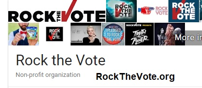
(under construction...)
TwoToOne.org
"The necessary margin of victory on November 6, 2018"
THE THEME SONG (please, please share with friends and groups) ** LYRICS AT BOTTOM OF PAGE
SOME SUGGESTIONS (resources)
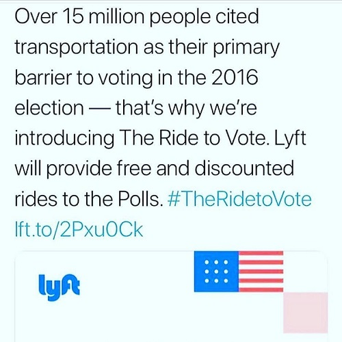
**Visit NeedToVote.com**
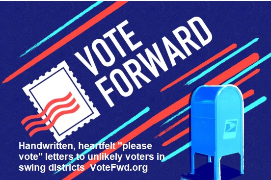
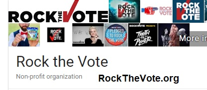
THE RATIONALE (not that you need one). Some articles and memes that have "appealed" to me recently.
Articles are not linked, but can be easily found by searching for title & publication.
Here's the most pointed one:
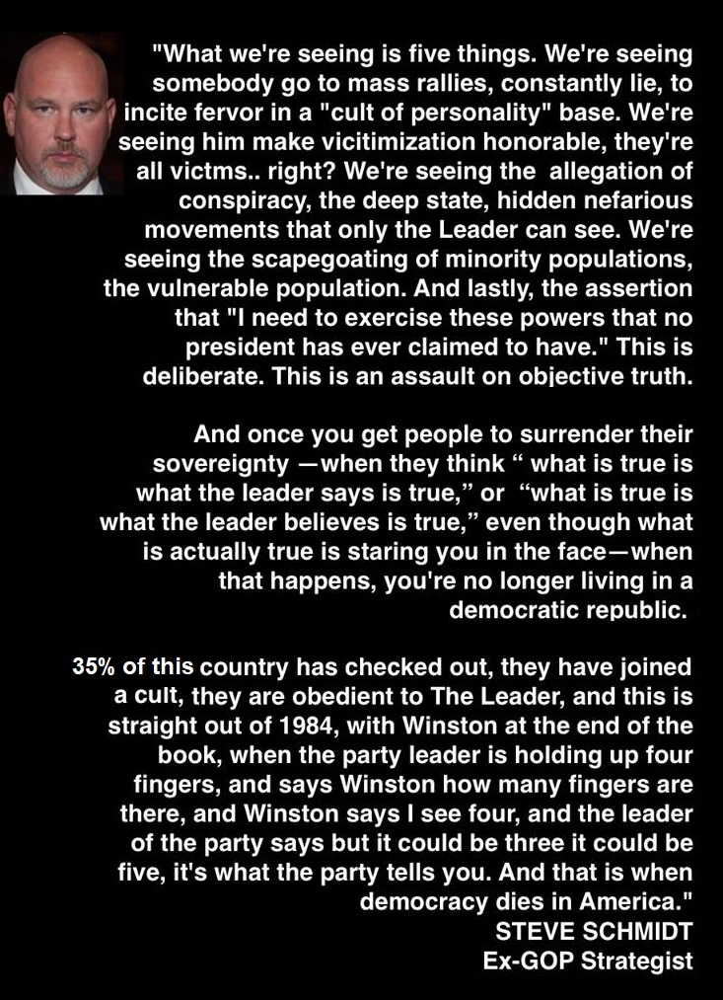
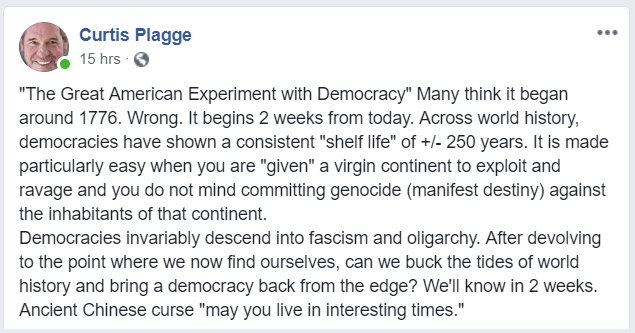
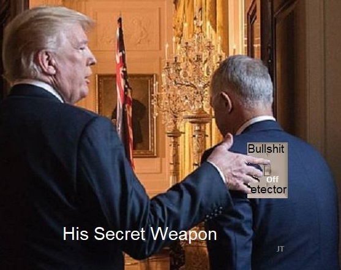
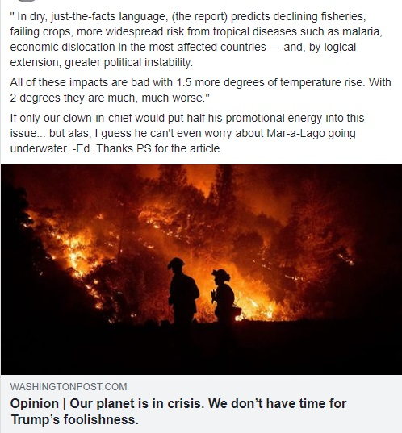
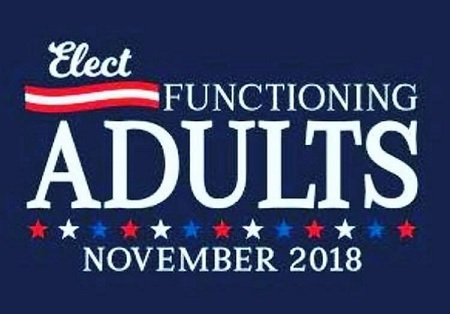
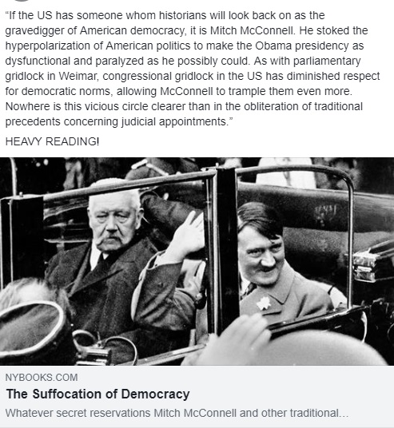
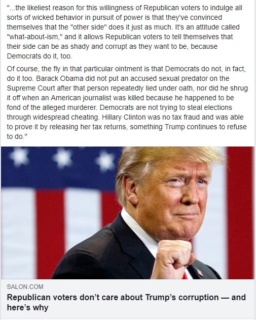
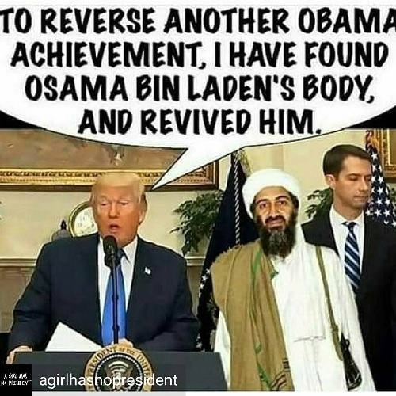

WASHINGTON (AP) — Facing the prospect of an electoral defeat that could imperil his presidency,
President Donald Trump said Tuesday that he won’t accept the blame if Republicans lose the
House in November, arguing that he is “helping” Republican candidates in the midterms.
(Duh - When did he ever accept blame for anything? -Ed.)
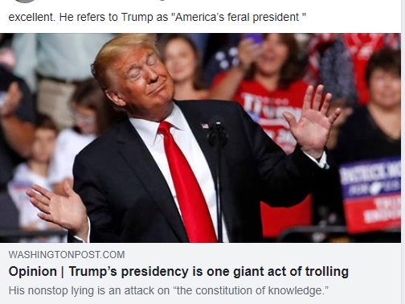

Your faithful servant,
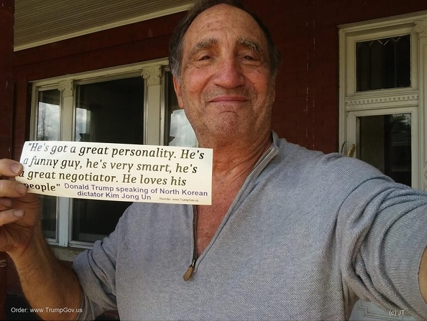
PLEASE SUBMIT USEFUL ARTICLES, GROUPS, PLANS ETC. TO BE POSTED HERE
Send (with links) to bluecanyon2 -AT- juno.com SUBJECT: "Suggested for TwoToOne site"
Please do not send opinions, essays, and especially trolling criticism (not interested)
LYRICS TO "TWO TO ONE" song:
TWO TO ONE (Margin of victory on November 6)
Jim Terr (c) 2018
A couple years ago a self-promoter came along
With a gift for stirring up every human instinct that is wrong.
Crudeness and self-centeredness, a tribal, selfish spirit,
A toxic stench that IN-fects everyone who gets too near it.
A disregard for expertise, for history and facts,
An impulse to respond to EV-erything with wild attacks.
An ego big as one of them insane New York skyscrapers,
An attitude that every woman’s there for you to take her.
The worst part is that there’s more folks than you would have expected
To buy this load of bull and get this imbecile elected.
It’s shaken me to the core, made me sleepless and tense
To feel surrounded by a crowd who’s lost their common sense.
So come Novermber 6 please won’t you show me that I’m wrong?
We need to turn out forcefully, a hundred million strong.
To tell this jackal and all of his enablers in the land,
By a margin of 2 to 1 that more of this we will not stand.
CHORUS:
Two to one, will set me at ease.
Two to one, we need a landslide if you please.
Two of us with our bullshit detectors still intact
For every Kool-Aid drinker with no interest in the facts.
I’ll sleep a whole lot better if we’ll show ourselves that day.
That decency and reason have not faded, gone away. ?
So turn out on November 6, by God let’s get it done.
We need a victory, pre-FER-a-bly by two to one.
So grab a friend or two and pledge to vote that fateful day.
To send a message loud enough to chase those ghouls away.
A margin big enough to let our shaky nerves calm down,
No more border walls or space cadets, the ravings of a clown.
CHORUS AGAIN